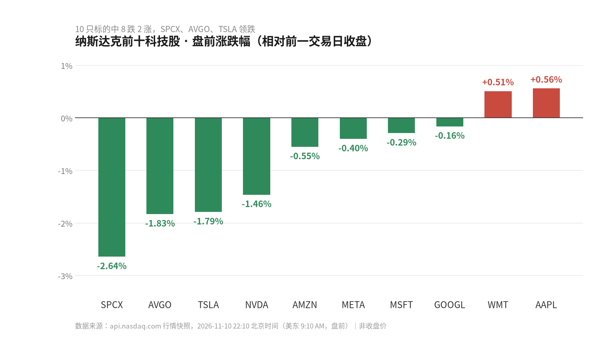

NASDAQ TOP 10 · 每日情报
报告日期 2026-11-10（周二）｜数据截至北京时间 22:10
10 只标的，8 只盘前下跌。
但今天的故事不在跌幅里。
如果只看这一行，今天的纳斯达克像一次普通的获利回吐。
把盘前行情和过去 24 小时的新闻放在一起看，画面完全不同：跌的是估值，动的是叙事，而叙事的主角换人了。
先说结论——今天真正的信息量，不在涨幅榜上那两个 0.5%，而在两颗还没公布任何规格的芯片，和一份还没有被公司官方确认的调查。
本文严格区分两类信息：报告已确认的事实，和基于事实的推断。推断都标了前提，前提不成立，判断就作废。
01
昨晚真正发生的五件事
一、Google 把 TPU 产品线又切了一刀。11 月 10 日，Google 宣布扩展第八代 TPU，新增 TPU 8tx 与 TPU 8i Max 两套系统，定位是支持高级 AI 工作负载。
需要提前说明：这条消息来自 RTTNews 的报道，没有 Google 官方新闻稿、产品规格页或财报作为一手确认。算力、带宽、制程、功耗、定价、出货时间，一项都没披露。
二、更早一天的报道说得更直接：11 月 9 日有报道称 Google 推出两款自研 TPU 新版本，直接对标 Nvidia。消息出来当天，Alphabet 早盘涨超 3%。
三、云业务的数字，比芯片更能说明问题。有媒体转述称，Google Cloud 单季营收突破 300 亿美元，营业利润率一年内从 23.7% 抬到 36.2%。
但这是二手数据，置信度 0.6，报告原文把它列为「待核验」——没有 Alphabet 官方财报链接，也没有拆解利润率改善的来源。
四、Nvidia 这边，问题不在产品。有报道称，公司董事会已就「CEO 黄仁勋成为外国情报活动目标」的报道启动调查。截至报告生成，Nvidia 官方公告、SEC 文件、董事会声明都没有出现，这条事实的官方确认程度有限。
市场先给了反应：11 月 9 日 NVDA 收跌 4.27%，报 178.67 美元。
五、另外两条容易被忽略的。Apple 在 11 月 9 日完成多批次票据发行，含 5 亿、7.5 亿美元浮息票据和 10 亿美元固息票据。AWS 第三季度营收同比增长 39%——增速不低，但云这一侧的竞争同时在加速。
02
盘前：跌得最狠的不是 Nvidia
先看全景。这是十只标的在 11 月 10 日盘前的涨跌幅，按跌幅从大到小排列。

数据来源：api.nasdaq.com 行情快照，2026-11-10 22:10 北京时间｜口径为盘中最新价减前一交易日收盘，非收盘涨跌
领跌的是 SPCX（-2.64%）、AVGO（-1.83%）、TSLA（-1.79%），Nvidia 的 -1.46% 只排第四。
真正值得琢磨的是另一个细节：GOOGL 只跌 0.16%，是十只里跌幅第二小的。芯片发布带来的正面情绪，至少在盘前托住了它——尽管那两颗芯片连规格都还没公布。
| 代码 | 最新价 | 前收 | 盘前涨跌 |
| GOOGL | 287.68 | 288.15 | -0.16% |
| AAPL | 352.64 | 350.69 | +0.56% |
| NVDA | 176.06 | 178.67 | -1.46% |
| MSFT | 543.59 | 545.18 | -0.29% |
| AMZN | 265.47 | 266.93 | -0.55% |
| SPCX | 138.32 | 142.07 | -2.64% |
| META | 638.80 | 641.37 | -0.40% |
| AVGO | 313.62 | 319.48 | -1.83% |
| TSLA | 371.29 | 378.05 | -1.79% |
| WMT | 126.30 | 125.66 | +0.51% |
单位：美元。快照时点为美东 9:10 AM，市场状态为盘前，不能等同于收盘价。涨跌配色遵循中文习惯：红涨绿跌。
03
三条判断，和它们各自的前提
判断一：自研芯片的竞争，正从「有没有」进入「便不便宜」。
同一代 TPU 里再切出两个型号，更像按工作负载做产品矩阵细分，而不是全新架构。真正决定它能不能撬动 Nvidia 的，是单位算力成本，而这个数字今天一个都没给。前提：新 TPU 通过 Google Cloud 对外供给。如果只自用，这条判断不成立。
判断二：云利润率的改善，比芯片发布更值钱。
如果 36.2% 最终被财报证实，含义是 AI 资本开支并没有把云业务利润吃掉，规模效应开始显形。这个「如果」很关键——目前只有一篇媒体转述。前提：利润率提升来自经营改善，而非一次性项目。
判断三：Nvidia 跌的不是芯片，是治理折价。
4.27% 的跌幅里，有多少来自事件本身、有多少来自同日大盘，报告没有拆分，也不该由我们拍脑袋给比例。可以确定的是：在官方声明出现之前，不确定性本身就是定价的一部分。
芯片的胜负要看三年，治理的折价只看三天。
前者的证据在规格页里，后者的证据在公告里。今天，两样都还没出现。
04
接下来盯这五个信号
以下五条，全部来自报告原文的后续观察清单，都可以用公开信息验证：
01 Google 官方博客或新闻稿，是否公布 TPU 8tx 与 TPU 8i Max 的正式规格、定位和可用时间
02 两款系统是否通过 Google Cloud 对外提供，定价模式与区域可用性如何
03 Nvidia 是否发布官方声明，或向 SEC 提交 8-K 披露相关治理与法律程序
04 Alphabet 下一份财报里的资本开支指引，以及 TPU 部署规模的表述
05 是否出现客户案例、第三方基准测试或性能评测
这五条里任何一条落地，都会加强或推翻上面的某一条判断。在此之前，所有的「芯片大战」都还只是新闻标题。
05
数据说明
报告周期：2026-11-10（美东交易日）｜数据截止：2026-11-10 14:10 UTC（北京时间 22:10）
覆盖范围：纳斯达克市值前十科技公司 10/10｜当日归并事件 61 个，其中待人工核验 48 条
数据来源：Nasdaq 官方市值筛选器、api.nasdaq.com 行情、Nasdaq News / PR Newswire、SEC EDGAR
新闻发布时间仅精确到日期；未获取全文的报道证据等级较低。本文中标注「报道称」的内容均未经公司官方一手确认。
本文为公开信息整理与分析，所涉个股仅作事实陈述，不构成任何投资建议。投资有风险，入市需谨慎。